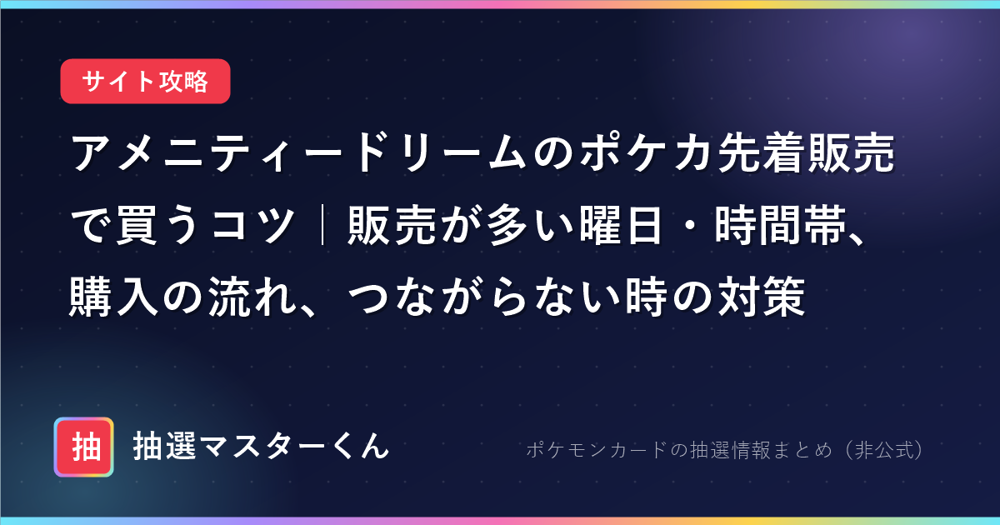

ポケカのBOXを定価で買える場所は、抽選だけではありません。トレカ通販のアメニティードリーム通販部では、ポケカのBOXが先着順で販売されることがあります。
ただし、販売の日時は事前に決まっておらず、始まった瞬間にアクセスが集中します。この記事では、当サイトで調べた販売の傾向と、購入までの流れ、つながらないときの考え方をまとめました。
この記事の要点
- 販売は予告なしの先着順。日時も商品もバラバラだが、月・火・木・土曜日の夕方16時以降に多い傾向
- BOXはシュリンク付き。商品によっては1回の注文で最大5BOXまで買えることも
- 混雑時はログインより「ゲスト購入」、支払いは入力の少ない「銀行振込」が早い
- 銀行振込は注文から7日以内に入金しないとキャンセル。お客様都合のキャンセルは不可
アメニティードリームの先着販売とは
アメニティードリームは、ポケカのほかにもさまざまなトレーディングカードを扱う専門店で、ネット通販の「アメニティードリーム通販部」を運営しています。
この通販部で、ポケカのBOXが抽選ではなく先着順で売り出されることがあります。抽選のように応募期間があるわけではなく、販売が始まった時点で在庫がある限り買えるしくみです。そのため、「いつ始まるかを知ること」と「始まったらすぐ買い進めること」が大事になります。
| 販売方式 | 先着順（なくなり次第終了） |
|---|---|
| 販売日時 | 事前の予告はなく、日も時間もバラバラ（月・火・木・土曜日の16時以降が多い） |
| 商品 | そのときによって違う（拡張パックのBOXなど） |
| 購入数 | 商品ごとに上限あり。BOXによっては最大5BOXまで |
| BOXの状態 | シュリンク付き |
販売日時・商品・購入数・シュリンクの有無は、当サイトがこれまでの販売を見て調べたものです。お店の方針で変わることがあるので、購入前に商品ページで確認してください。
販売が多い曜日と時間帯の傾向
販売日時は決まっていませんが、これまでの販売を見ると曜日と時間帯にはある程度の傾向があります。
| 曜日 | 月 | 火 | 水 | 木 | 金 | 土 | 日 |
|---|---|---|---|---|---|---|---|
| 傾向 | ◎ | ◎ | △ | ◎ | △ | ◎ | △ |
◎＝販売が多い、△＝少なめ（当サイト調べ。必ずその曜日に販売されるわけではありません）
時間帯は夕方16時以降が多い
販売が始まる時間は、夕方の16時以降が多い傾向です。お昼や午前中に始まることもありますが、狙うなら夕方からが本番です。
つまり、月・火・木・土曜日の16時以降は、販売の告知が出ていないかこまめに確認する、という狙い方が現実的です。仕事や学校の帰りでもスマホから買えるよう、次の章の準備をしておきましょう。
販売開始の知らせはどこで見る？
販売開始は、サイトの決まった場所で事前に告知されるわけではありません。始まったことを知るには、次のような方法があります。
- 公式X（@amenitydream）を見る：通販部の新商品や予約受付のお知らせが投稿されています。通知をオンにしておくと気づきやすくなります
- Xで「アメニティードリーム ポケカ」などを検索する：販売に気づいた人の投稿が、販売開始の合図になることがあります。「最新」の並びで見るのがおすすめです
- 通販部のポケカのページを確認する：曜日の傾向に合わせて、商品が並んでいないか見に行きます
購入の流れ
購入は、次の順番で進みます。先着販売は数分で売り切れることもあるので、流れを事前に頭に入れておくだけでも差がつきます。
- 商品の詳細ページ：数量を選んでカートに入れる
- カート：購入手続きへ進む
- ログイン画面：「ゲスト購入」か「ログイン」を選ぶ
- 支払い方法の選択：銀行振込などを選ぶ
- 注文内容の確認：内容を確かめて注文を確定する
- 注文完了：注文完了のメールが届く
混雑しているときは「ゲスト購入」
アクセスが集中していると、ログインの画面で止まってしまうことがあります。混雑時は、ログインせずに進めるゲスト購入のほうが、注文完了までたどり着きやすくなります。
住所の入力は事前に準備しておく
ゲスト購入では、名前・住所・電話番号・メールアドレスを毎回入力します。ここで手間取ると、その間に売り切れてしまうことも。ブラウザの自動入力（オートフィル）機能に住所などを登録しておくと、入力を一瞬で終わらせられます。
ChromeやSafariなどには、住所や連絡先を保存して自動で入力する機能があります。入力内容に間違いがないか、事前に一度確認しておきましょう。
支払いは「銀行振込」が早い
アメニティードリーム通販部の支払い方法は、銀行振込・郵便振替・PayPal（クレジットカード・デビットカードも使える）などです。このうち銀行振込は、カード番号の入力や別の画面への移動がないため、注文完了までの手続きが一番早く終わります。
銀行振込を選ぶときの注意
- 注文完了から7日（168時間）以内に振り込まないと、注文はキャンセルになります
- お客様都合のキャンセル・返品は受け付けていません。買う数をよく考えてから注文しましょう
- 入金されていない注文が多いと、新しい注文を断られることがあります
- PayPal（カード払い）は、商品の合計が2,000円以上のときだけ使えます
つながらないときの考え方
先着販売の時間は、販売を知らせる通知ツールや大量のアクセスでサイトがとても混み合い、「503」などのエラーページが出ることがほとんどです。
ここで大事なのは、すぐにあきらめないことです。エラーが出ても、少し待ってページを再読み込みすると、つながる瞬間があります。混雑の中でも、手作業で買えている人は少なくありません。
- エラーが出たら、数秒あけて再読み込みを続ける
- カートに入ったら、ゲスト購入 → 銀行振込で一気に進める
- 途中でエラーになっても、注文完了メールが届いていないか確認してから、もう一度注文する（二重注文を防ぐため）
今受付中の「シュリンク付き」の抽選
アメニティードリームのBOXはシュリンク付きですが、抽選でもシュリンク付きのBOXを扱うお店があります。11月19日時点で受付中・受付予定のものは次のとおりです。
- トレカプラザ55通販（ハドウシーカー）
- Amazon（招待リクエスト。ハドウシーカー・30th CELEBRATION BOXなど）
最新の情報は、抽選一覧の「販売形態」でBOX（シュリンク付き）を選ぶと絞り込めます。
シュリンクの有無は、お店の公式の告知や当サイトの調べによるものです。商品や時期によって変わることがあります。
まとめ
アメニティードリームの先着販売は、いつ始まるかわからないうえに必ず混雑する、難しい販売です。それでも、次の準備をしておけば、手作業でも十分に買えるチャンスがあります。
- 月・火・木・土曜日の16時以降を中心に、公式Xや検索で販売開始をチェック
- 住所などはブラウザの自動入力に登録しておく
- 混雑時はゲスト購入、支払いは銀行振込で一気に進める
- エラーが出てもあきらめずに再読み込み
抽選と先着販売を組み合わせると、BOXを定価で手に入れるチャンスが広がります。抽選の締切は当サイトでまとめているので、あわせてチェックしてください。
出典
販売の曜日・時間帯の傾向・購入数・シュリンクの有無・購入の流れは、当サイトがこれまでの販売を調べたものです。
当サイトは非公式のファンサイトです。価格・日程などは記事公開時点の情報なので、最新の情報は公式サイトや各販売店でご確認ください。